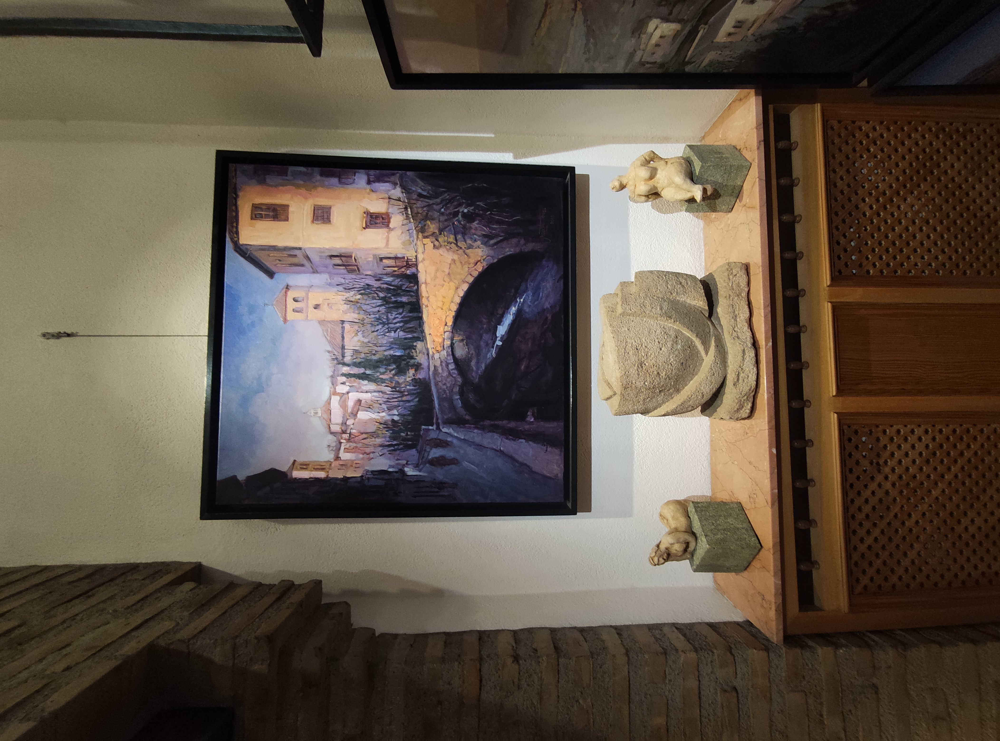
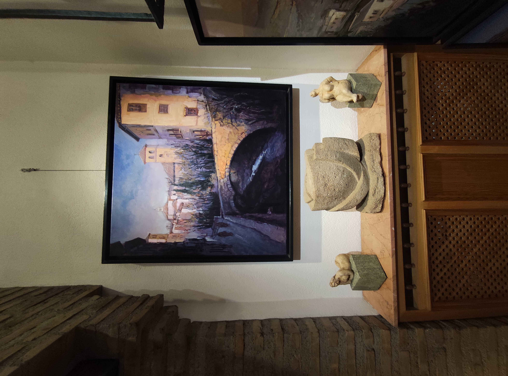
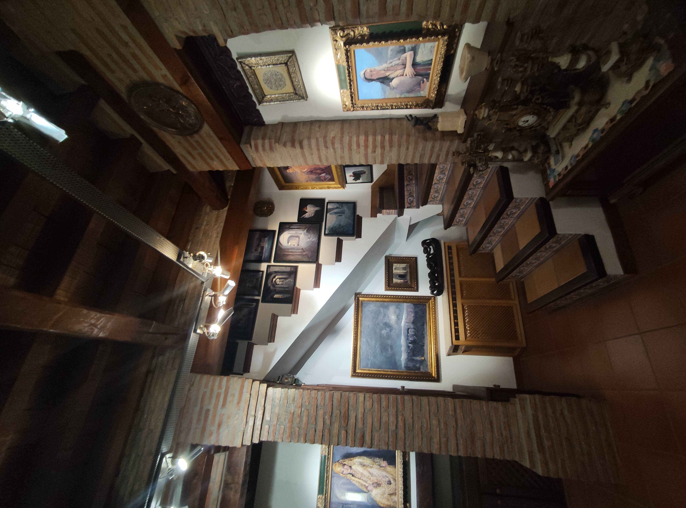
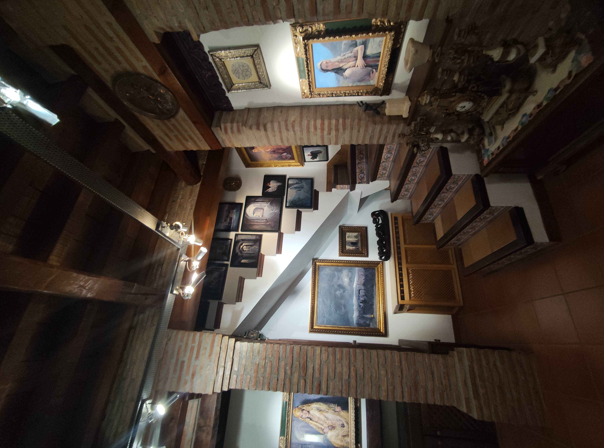

El Torreón de Cotilla, en la actualidad
El Torreón de Cotilla, ubicado en Ogíjares, es un edificio histórico que ha pasado por varias fases a lo largo de los años. Inicialmente, fue construido como una fortaleza defensiva en el siglo XVI, y más tarde fue convertido en una vivienda privada. Durante el siglo XX, el Torreón fue utilizado como un bar popular en la ciudad. Sin embargo, en los últimos años ha sido renovado y convertido en el Museo ZocaloArte.
El Torreón de Cotilla es un lugar lleno de historia y cultura, donde se pueden ver exposiciones de arte contemporáneo y participar en eventos culturales. Además, el edificio ha sido restaurado cuidadosamente para preservar su belleza histórica mientras se adapta a su función actual como museo. El museo cuenta con una serie de salas temáticas donde se pueden ver exposiciones de artistas locales y nacionales, así como una biblioteca y una sala de conferencias.
Además de su importancia histórica y cultural, el Torreón de Cotilla es un lugar impresionante desde un punto de vista arquitectónico. La torre cuenta con una imponente arquitectura renacentista con una gran variedad de detalles decorativos, como arcos de medio punto, esculturas y bóvedas de cañón. El museo también cuenta con una terraza panorámica desde donde se puede disfrutar de una impresionante vista de la ciudad de Ogijares.
En resumen, El Torreón de Cotilla es un lugar fascinante que ha pasado por varias fases a lo largo de los años, pero que actualmente se ha convertido en un museo lleno de historia y cultura, donde se pueden apreciar tanto la belleza arquitectónica como las exposiciones de arte contemporáneo. Es un lugar que vale la pena visitar para conocer más sobre la historia y la cultura de la ciudad de Ogíjares.

¿Que hay dentro del Torreón?

 



 
